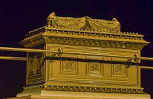

Arca da Aliança
A Arca da Aliança, também conhecida como Arca do Testemunho ou a Arca de Deus é o artefato que se acredita ser a relíquia mais sagrada dos israelitas, descrita na Bíblia como um baú de madeira, coberto de ouro, com um tampo chamado propiciatório. De acordo com o livro do Êxodo, a arca continha as duas tábuas dos Dez mandamentos. Conforme a livro dos Hebreus, do Novo Testamento, também continha a arca a vara de Arão e maná. Foi utilizada pelos hebreus até seu desaparecimento, que segundo especulações, ocorreu na conquista de Jerusalém por Nabucodonosor II.
Origem
Segundo o livro do Êxodo, a montagem da Arca da Aliança foi orientada por Moisés, que por instruções divinas indicou seu tamanho e forma. Nela foram guardadas as duas tábuas da lei; a vara de Aarão; e um vaso do maná. Estas três coisas representavam a aliança de Deus com o povo de Israel. Para judeus e prosélitos a Arca não era só uma representação, mas a própria presença de Deus.
Baixo-relevo em ouro do transporte da Arca da Aliança na Catedral de Santa Maria de Auch, França.
Construção
No livro de Êxodo (Êx 25,10-22) a Bíblia descreve a Arca da Aliança da seguinte forma: caixa de madeira de acácia, com 2 côvados e meio de comprimento (um metro e dez centímetros ou 110 cm), e um côvado e meio de largura e altura (70 cm). Cobriu-se de ouro puro por dentro e por fora, com uma bordadura de ouro ao redor. - (Êxodo 25,10-16)
A Arca fazia parte do conjunto do Tabernáculo, com outras tantas especificações. Ela ficaria repousada sobre um altar, também de madeira, coberto de ouro, com uma coroa de ouro ao lado. Somente os sacerdotes levitas poderiam transportar e tocar na arca, e apenas o sumo-sacerdote, uma vez por ano, no dia da expiação, quando a Luz de Shekiná se manifestava, entrava no santíssimo do templo. Estando ele em pecado, morreria instantaneamente.
Desaparecimento
"Nos documentos referentes ao profeta Jeremias lê-se que ele ordenou aos que eram levados para o cativeiro da Babilônia que tomasse o fogo, como já foi referido, e que lhes faz recomendações, ao dar-lhes um exemplar da lei, para que se não esquecessem dos preceitos do Senhor, nem extraviassem, ao ver os ídolos de ouro e prata e os seus adornos. Dando-lhes outros avisos semelhantes, exortava-os a que não apartassem do seu coração a lei de Deus. Lia-se também nos mesmos escritos que este profeta, por uma ordem particular recebida de Deus, mandou que se levassem com ele o tabernáculo e a Arca, quando escalou o monte a que Moisés tinha subido para ver a herança de Deus. Tendo ali chegado, Jeremias achou uma caverna, pôs nela o tabernáculo, a Arca e o altar dos perfumes, e tapou a entrada. Alguns dos que o seguiam voltaram de novo para marcar o caminho com sinais, mas não puderam encontrá-lo. Quando Jeremias soube disto, repreendeu-os: Sabei, disse-lhes, que este lugar ficará incógnito, até que Deus reúna seu povo disperso e use com ele de misericórdia. Então descobrirá o Senhor estas coisas, aparecerá a majestade do Senhor e ver-se-á uma nuvem, como apareceu no tempo de Moisés e como quando Salomão pediu que o templo fosse gloriosamente santificado" (II Macabeus 2:1–8, (Tradução da Vulgata pelo Pe. Matos Soares).
Então é isso! Espero que você tenha gostado do nosso artigo com essa curiosidade sobre a Arca da Aliança e seu simpático mascote.